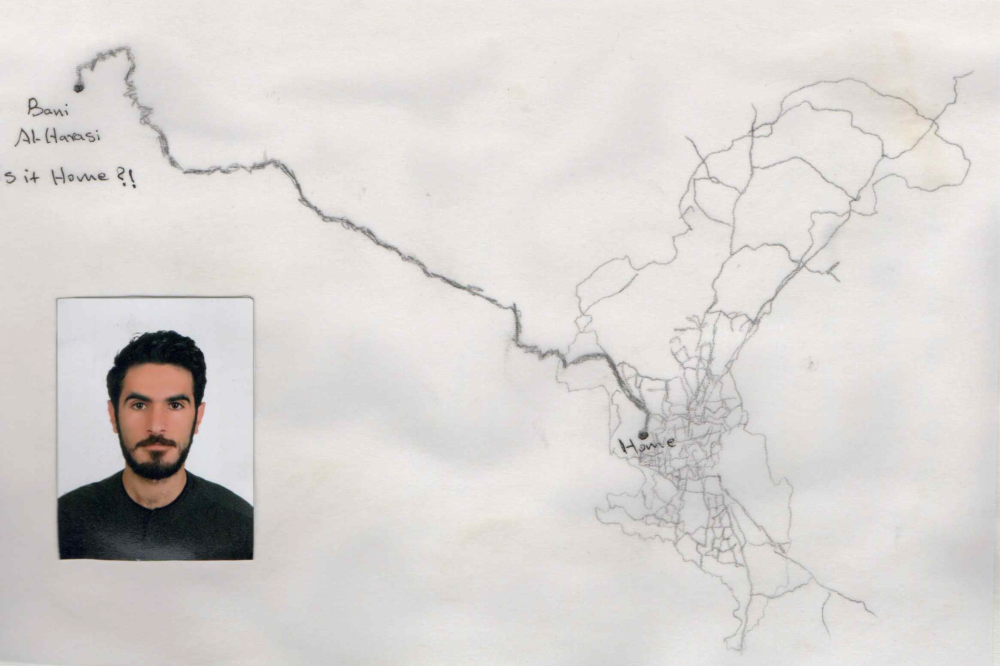

Artist & Photographer
Yemeni artist and photographer based in Denmark.

My practice explores memory, identity, belonging and the ways personal and collective histories are preserved, fragmented and retold through images, archives and material processes.